Esta historia comienza el 17 de mayo de 2015, con el lanzamiento de Blurryface, álbum que catapulta a Twenty One Pilots a escala mundial. En el mismo, Tyler representa un miedo o inseguridad propia en cada canción, siendo 9 las canciones luego seleccionadas para representar cada una a un obispo diferente, las cuales podemos encontrar en la tapa del álbum formando la cara de Blurryface, quien años más tarde sería representado por el obispo Nico en una especie de dualidad, ya que el nombre Blurryface puede usarse para hacer referencia tanto a Nico como a los 9 obispos en conjunto.
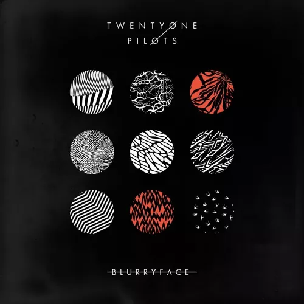
Portada del álbum Blurryface.
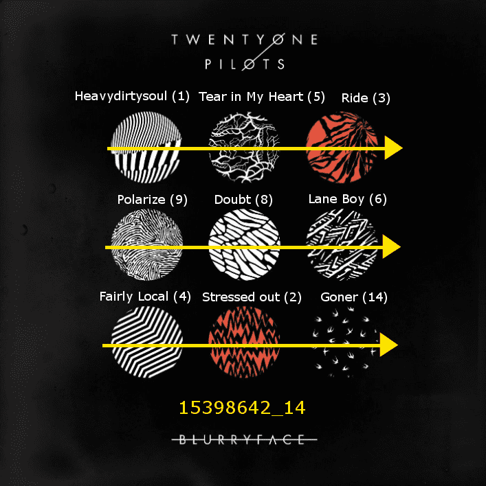
Canciones representadas en la portada del álbum.
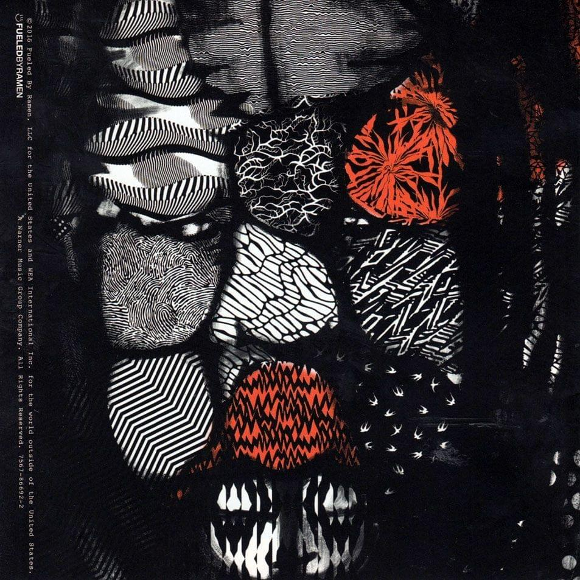
Blurryface.
Portada del álbum Blurryface.Canciones representadas en la portada del álbum.Blurryface.
Como momento relevante de esta era, podemos encontrar al video musical de Heavydirtysoul, donde vemos a Tyler ser llevado por una persona a la que no se le ve la cara, en un auto que poco a poco se va quemando y desarmando, esto representa la separación entre la realidad y la mente de Tyler, que es donde al parecer transcurre la historia. Años más tarde, Clancy explicaría que lo que vemos en el video fue uno de sus primeros intentos de escape de Dema, engañando a Nico (quien conduce el auto) con una distracción de fuego para poder escapar (se dice que los obispos son incapaces de ver el color amarillo, color que luego será utilizado por los Banditos para representar su lucha).
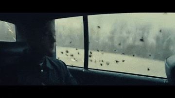
Tyler siendo llevado por Blurryface.
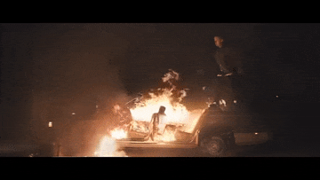
Tyler bajando del auto en llamas.
Tyler siendo llevado por Blurryface.Tyler bajando del auto en llamas.
Hiatus (2017-2018)
El 6 de julio del 2017 en las redes sociales de la banda se empezaron a publicar fotos de un ojo rojo cerrándose, cada foto tenía escrita partes de canciones de Twenty One Pilots. Cuando el ojo finalmente se cerró, se publicó una foto completamente en negro con la frase "and now I just sit in silence" (“y ahora me siento en silencio”, fragmento de la canción Car Radio). Luego de esto, todas las fotos de perfil y portada de la banda se cambiaron por unas completamente en negro. Es así como se da inicio a esta etapa de transición entre los álbumes Blurryface y Trench.
Hiatus es una palabra en latín que significa interrupción espacial o temporal, justamente representó el período de tiempo de un año en el cual no se publicó absolutamente nada en las redes sociales de la banda o de sus integrantes.
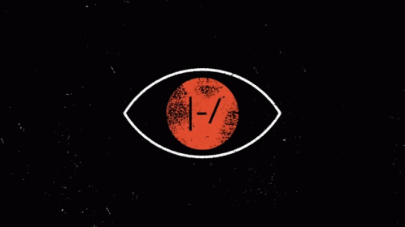
Ojo cerrándose.
Ojo con letras de canciones cerrándose.
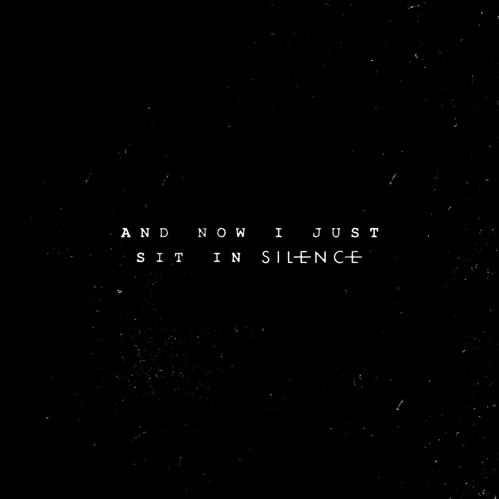
Imagen final, comienza el Hiatus.
Ojo cerrándose.Ojo con letras de canciones cerrándose.Imagen final, comienza el Hiatus.
Las novedades volverían en abril de 2018, cuando el sitio web de merchandising de la banda comenzara a subir una serie de videos, en uno de ellos se pudo apreciar, en el último segundo del mismo, un link que nos daría la entrada al mundo de Trench: dmaorg.info/found. En este link encontramos un texto que indica un error, como si estuviéramos en un sitio donde no deberíamos estar. En el mismo se puede leer, juntando las letras mayúsculas que están repartidas a lo largo del párrafo, la oración “EAST IS UP”, frase que luego formaría parte de la canción Nico and the Niners.
Volviendo al video de la página de merch, se puede observar también otra parte de un link que dice “clancy.html”, esto llevó al fandom a unir el primer link, mas el código de violación de la página y esta última parte, formando dmaorg.info/found/15398642_14/clancy.html, sitio web en el cual podemos acceder a diferentes imágenes de cartas, mapas y demás cosas sobre la historia.
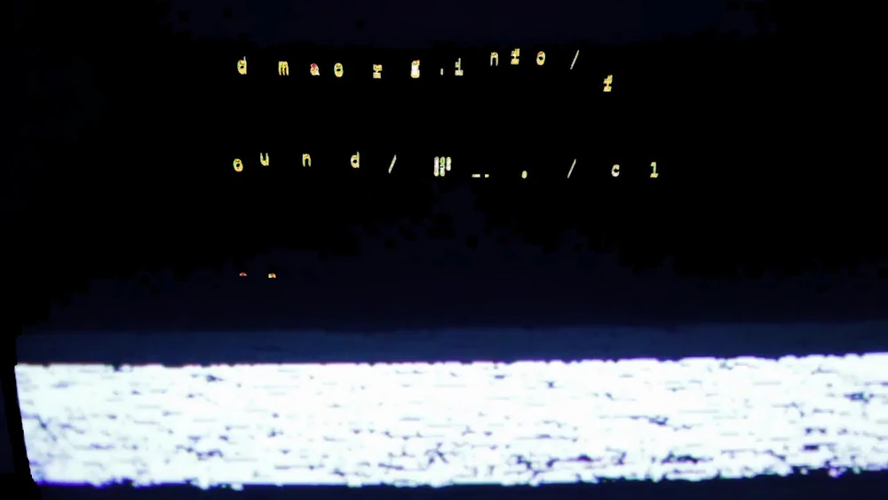
Frame que indica el sitio web dmaorg.info/found.
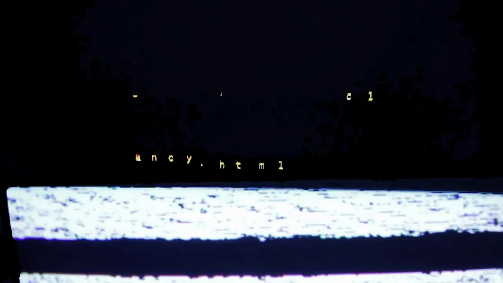
Frame que agrega clancy.html a la url.
Frame que indica el sitio web dmaorg.info/found.Frame que agrega clancy.html a la url.
Explicar el significado de cada una de las cartas y simbolismos de la página de dmaorg implicaría alargar mucho mas este texto, si tu objetivo es entender cada una de estas simbologías, te invito a leer el pdf que creó @xpalipalix de donde se ha nutrido también este sitio web. (Link al pdf).
Este es el punto en el cual el álbum Blurryface entra en juego como una presentación de los obispos, ya que, mediante la resolución de algunos acertijos y deducciones en la página encontrada, se lograría dar con sus nombres. El fandom utilizó el código de violacion de la primera página para vincularlo con la tapa del álbum Blurryface, indicando con cada número, qué canción corresponde a cada uno de los círculos presentes, y encontrando de este modo el nombre de cada obispo, ya que en la página de dmaorg.info, en el mapa de Dema, podemos observar que en el centro hay 9 circulos similares al de la tapa de Blurryface, cada uno con un nombre. Luego de voltear el mapa 90 grados a la izquierda (siguiendo la frase "EAST IS UP"), podemos vincular cada nombre a una canción. Dichos nombres luego serían encontrados en cada una de las letras de las canciones correspondientes.
Canciones representadas en la portada del álbum.
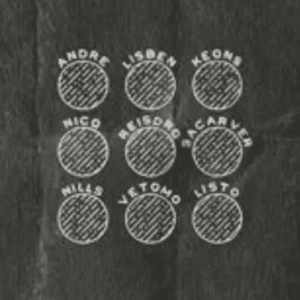
Nombres de los Obispos.
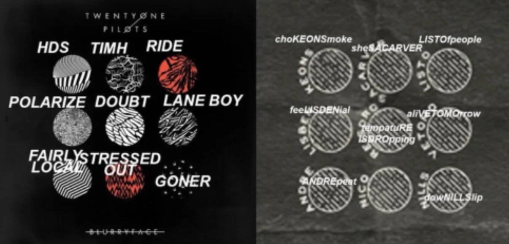
Nombres encontrados en las letras de las canciones.
Canciones representadas en la portada del álbum Blurryface.Nombres de los Obispos.Nombres encontrados en la letra de las canciones.
Para resumir este gran hallazgo en la historia de Trench, en este sitio web se encuentran las cartas que (hasta el momento) un desconocido personaje llamado Clancy fue escribiendo a lo largo de su camino en la ciudad de Dema y también cuando logra escapar, nombrando algunos obispos, explicando la religión que profesan, los rituales que llevan a cabo y haciendo referencia a personajes que luego aparecerán en la historia. Esta era llegó a su fin los primeros días de julio de 2018, cuando en las redes sociales de la banda se postean dos videos de un ojo abriéndose, esta vez de color amarillo.
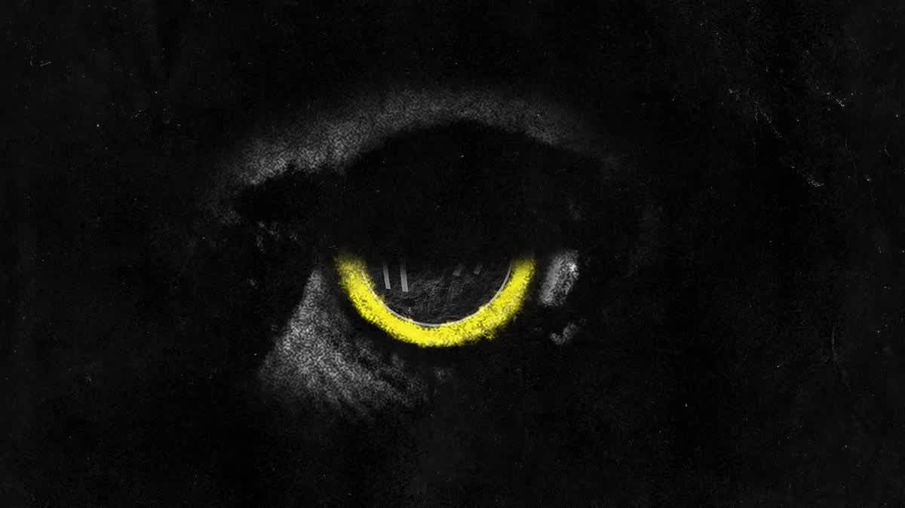
Primer post de un ojo abriéndose, finaliza el Hiatus.
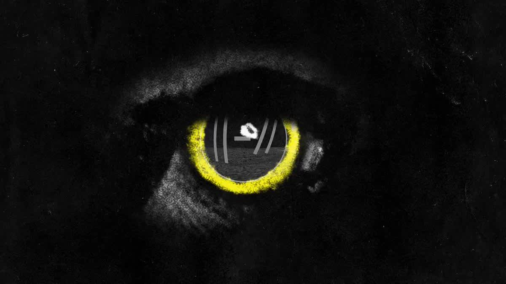
Segundo post de un ojo abriéndose.
Primer post de un ojo abriéndose, finaliza el Hiatus.Segundo post de un ojo abriéndose.
Trench (2018-2020)
El 11 de Julio de 2018, se publica el video musical de Jumpsuit, dando comienzo a la era Trench. A este video le seguirían los de las canciones Nico and the Niners y Levitate. En esta trilogía de videos se narra como Tyler, quien había escapado de Dema en el video de Heavydirtysoul, es capturado por un obispo (luego se sabría que ese obispo era Nico), y devuelto a la ciudad, en donde no planearía pasar mucho tiempo, ya que aprovecha un ritual de los obispos para poder escapar nuevamente, encontrándose por primera vez cara a cara con Josh (de ahora en más, Torchbearer), el líder de los Banditos. Estos sacan a Tyler de la ciudad y lo llevan a su campamento, donde lamentablemente, y aunque intentaran un cambio de imagen (rapando a Tyler), Nico lo vuelve a encontrar y recapturar.
Si bien las demás canciones del álbum Trench no tienen videos musicales sobre la historia directa, encontramos mucho significado en las letras y también en el video de la canción Chlorine, donde se presenta a Ned, quien resultaría de vital importancia para la historia más adelante.
Level of Concern (2020)
El 9 de abril de 2020, se publica la canción Level of Concern, que si bien no habla sobre la historia de Trench, lo que se generó a continuación si. Esta era surgió como una necesidad debido a la pandemia que sufrió el mundo en tal año. Tyler y Josh, sin poder verse en persona, idearon el que quizás sea el mejor pasatiempo que una banda nos puede haber dado. Se trató de una especie de juego de ingenio por niveles, los cuales se iban resolviendo poco a poco con códigos, necesitando distintas habilidades de deducción, conocimientos de matemática, geografía, fotografía, programación, entre otros. Básicamente se necesitaba a un grupo de personas especializadas que trabajen en conjunto para resolver todos los niveles, y así fue.
El 10 de junio de 2020, la banda publica una imagen en sus redes que contenía un código, el cual hacía referencia a una fecha y una hora (12 de junio de 2020, a las 12pm). Llegado ese día, y durante 24hs, la banda realizó una emisión en directo en Youtube, en la cuál se podía ver un televisor viejo que pasaba distintos videos en forma de propaganda, con una voz en off hablando, durante algunos momentos se podían observar códigos y pistas hacia lo que terminó siendo un nuevo sitio web: usb.twentyonepilots.com (hoy en día redirige a la página de la banda). En este sitio web, se podían ingresar distintos códigos que desbloqueaban nuevos niveles y con ellos distintos archivos .zip descargables, los cuales contenían imágenes de la banda y entre ellos algunos acertijos para poder conseguir nuevos códigos y desbloquear nuevos niveles. Una vez que se llegó al nivel 20, este desbloqueó un nuevo sitio web: loc.twentyonepilots.com (hoy en día redirige a la página de la banda), donde permitía a cada usuario que se registre, subir un video bailando o reaccionando a la canción Level of Concern. Estos videos se usaron para crear una emisión en directo en donde dicha canción se reproducía en loop infinito, pero en cada una de las veces, se reproducían distintos videos que habían sido cargados al sitio web por los fans, haciendo cada repetición completamente única. Al día de hoy se puede encontrar este video donde se resume toda la experiencia antes nombrada.
Hasta el momento, toda esta experiencia no había añadido nada nuevo al universo Trench, pero en octubre, a las primeras personas que resolvieron el juego y se registraron en el sitio web, la banda les envió un pendrive a modo de premio. El mismo poseía contenido similar a los que se encontraban en los archivos .zip del juego, además habían dos videos que grabaron Tyler y Josh agradeciéndole a la gente por haber jugado el juego. La parte importante está en el vídeo de Tyler, ya que a su derecha podemos observar una televisión vieja que empieza a reproducir símbolos, los cuales en ese punto ya eran conocidos porque en el juego de Level of Concern se había creado una especie de abecedario con dichos símbolos. Al traducirlos se llegó al mensaje "Clancy is dead" (Clancy está muerto).
No habría más noticias acerca de la historia hasta diciembre del 2020, cuando la banda publica la canción Christmas Saves the Year. La portada de esta canción muestra un edit de Tyler y Josh cuando eran chicos, y detrás suyo, una especie de regalo que tiene un sticker con la palabra "CLANCY" en celeste, y, por debajo de esto, en rosa se puede leer “SAI IS PROPAGANDA”.